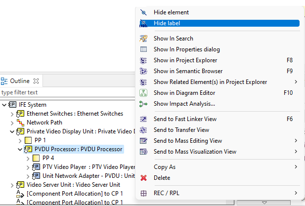

Element Characteristics Management
Anchor on inner element border
In order to improve the diagram aspect, it is now possible
to link the edges closely to the images. You only need to use images with a transparent background (SVG images).

Hide/Modify Container Borders
The ability to
hide border on a container element can be useful especially when
an image is displayed.
To hide the border of a node in the diagram, you can set the
Border Size to 0
in the Properties View / Style tab

In contrast, it can be useful to change the container border
to highlight a container or a kind of container.
To modify the border line style of a node in the diagram, you can set
the Border Line Size to dot, dash, dash_dot in the Properties View / Style tab

Hide container Icon
It is also possible to hide icon on container
to improve the readability of the diagrams.
To hide the border of a node in the diagram, you can set the
Show Icon to false in the Properties View / Style tab

Hide/modify container label
It is also possible to hide label on container
to
improve the readability of the diagrams.
- Label on a diagram can be hidden by simply right clicking on the graphical element (or elements if you want to hide several label elements at once) you want to hide. Then, choose
Show/Hide / Hide label
. The label element is now hidden from view. To reveal it, select
Show label
- From the tool-bar using the
Hide label button
.

- From the outline view, you can see every model element. Choose outline mode to see the semantic model in a tree viewer. You can now right click on an element and choose
''Hide label (or in contrast,
Show label)''.

- From a tree viewer. When there is no selected element on the diagram, the tab bar provides the button
Show/Hide
. This button opens a dialog to manage shown and hidden elements with their labels on the diagram with a tree view.
To hide label element, you have to deselect it.

- From the shortcut:
Ctrl + L
. And to reveal it:
Ctrl + Shift + L
.
Change Label Appearance
It can be useful to change the container label appearance
to highlight a container or a kind of container.
To modify the label appearance of a node in the diagram, you can select underline, strikethrough functionalities in the
Properties View / Appearance tab
.
Hiding elements
There are two ways to hide elements:
- Element on a diagram can be hidden explicitly. To do that, simply right click on the graphical element (or elements if you want to hide several elements at once) you want to hide. Then, choose
Show/Hide / Hide element
. The graphical element is now hidden from view.
- From the tool-bar using the
Hide element
button.

- From the outline view, you can see every model element. Choose outline mode to see the semantic model in a tree viewer. You can now right click on an element and choose
Hide element.

- From a tree viewer. When there is no selected element on the diagram, the tab bar provides the button
Show/Hide
. This button opens a dialog to manage shown and hidden elements on the diagram with a tree view.
To hide elements, you have to deselect it.

Reveal hidden elements
There are two ways to reveal hidden elements:
- From the outline view, in outline mode, you can see every model element. The elements that are hidden have their names displayed in italic style and their icon is decorated with a yellow dot in the top left corner. To reveal one of these elements, simply right click on it and choose Show element.

- From a tree viewer. When there is no selected element on the diagram, the tab bar provides the button
Show/Hide
. This button opens a dialog to manage shown and hidden elements on the diagram with a tree view.
To show elements, you have to select it.
Delete element from diagram/model
-
Delete from Diagram. This action removes the selected graphical element from the diagram, but does not delete the corresponding semantic elements. It is only available on un-synchronized diagrams or element types.

-
Delete from Model. This action removes both the selected graphical element and the corresponding semantic elements.